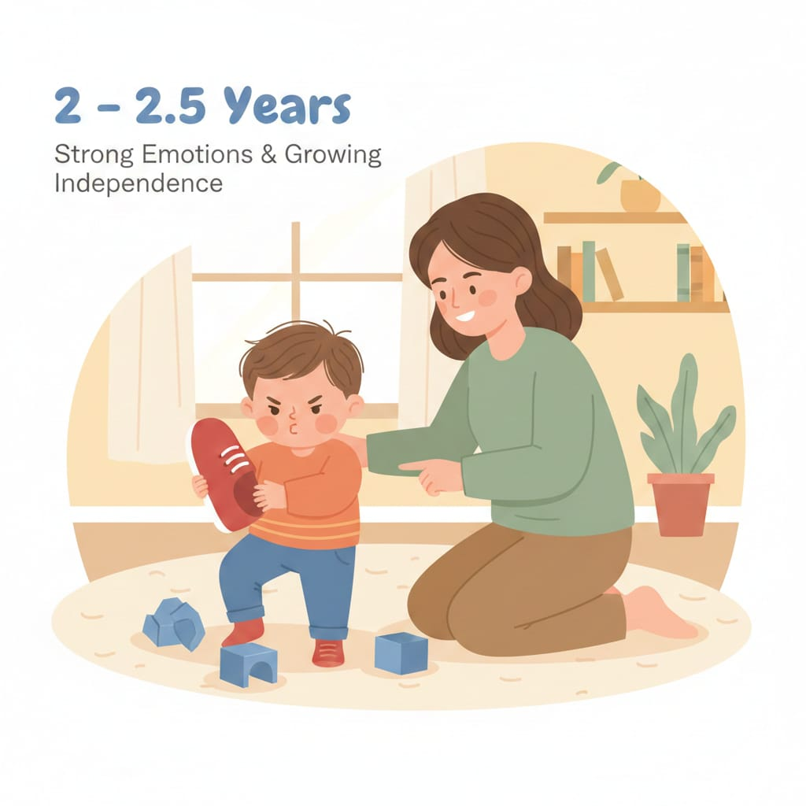

2 – 2.5 سنة
المرحلة دي بتتميز بمحاولة الاستقلال واختبار الحدود… واللغة لسه مش مكفية، فممكن يظهر “عناد + نوبات غضب + سلوكيات جسدية”.

قاعدة: ثباتك + روتين واضح + بدائل بسيطة = يقلل أغلب مشاكل السن ده.
المرحلة دي بتتميز بمحاولة الاستقلال واختبار الحدود… واللغة لسه مش مكفية، فممكن يظهر “عناد + نوبات غضب + سلوكيات جسدية”.
